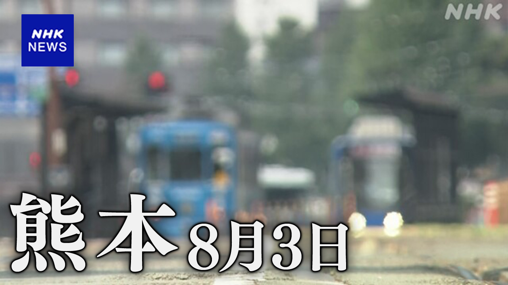
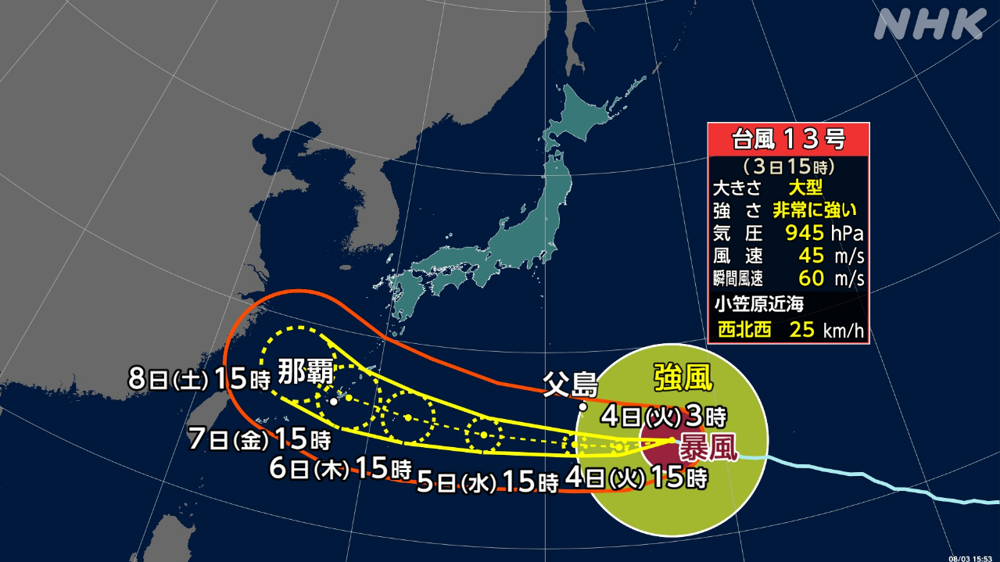

最新ニュース
1️⃣ 熊本の地震 初めての「酷暑日」 熱中症に気をつけて

熊本の地震から、6日が過ぎました。
危険な暑さが続いています。熊本市では、40.3℃になりました。熊本県では、40℃以上の「酷暑日」に初めてなりました。
県は、車の中で避難していた女性が、7月30日に亡くなったと発表しました。熱中症かもしれません。女性は70歳ぐらいです。車にガソリンはありませんでした。ガソリンがないとエアコンを使うことができません。
4日も暑くなりそうです。気象庁は、熱中症にならないように気をつけてくださいと言っています。
昼間は家の片付けなどのために外にいる時間を減らしましょう。暑い時間は、できるだけ涼しい所にいてください。片付けなどは、少しでも涼しい時間にしてほしい、と専門家は話しています。
2️⃣ 熊本県 「2次避難」の受け付けが始まった
熊本県では、160ぐらいの避難所に8300人以上が避難しています。しかし、避難所では、家と同じように休むことはできません。
県は、避難所にいる人たちに、安全な場所にあるホテルなどに、もう一度避難してほしいと考えています。「2次避難」と言います。お風呂に入ったり、ベッドで寝たりして、休むことができます。
3日から、宇土市、宇城市、八代市、そして氷川町で、「2次避難」したい人の受け付けが始まりました。県は、90以上のホテルなどを準備しています。
3️⃣ 台風13号 小笠原諸島に向かって進んでいる

台風13号が、東京の南、小笠原諸島に向かって進んでいます。大きくて、とても強い台風です。
小笠原諸島では、3日から5日に、波が高くなったり、風が強くなったりしそうです。
4日は、とても強い風が吹きそうです。何かにつかまらないと立っていられないほどの風です。
雷が鳴って、激しい雨が降るかもしれません。
大雨で山が崩れるかもしれません。
台風13号は西に進んで、6日には、沖縄県や鹿児島県の奄美地方の近くに行きそうです。
気象庁は、新しい情報を調べてほしいと言っています。
4️⃣ 羽田空港 「飛行機に乗る30分前に荷物を預けて」
羽田空港では、今、飛行機に乗る人は、出発の20分前までに荷物を預けます。
9月からは、出発の30分前までになります。今までより10分早いです。
2025年、羽田空港で飛行機に乗ったり降りたりした人は、9000万人以上いました。
飛行機に乗る人の荷物を運ぶのに時間がかかって、出発が遅れることが増えています。
50歳ぐらいの女性は、「最近はよく遅れているなと思っていました。少し早く空港に来ます」と話していました。
- 〜すぎる
- 〜から
- 〜ている / 〜でいる
- 〜になる
- 〜以上
- 〜中
- 〜かもしれない / 〜かもしれません
- 〜くらい / 〜ぐらい
- 〜こと
- 〜ことができる
- 〜そうだ
- 〜ように
- 〜ならない
- 〜てください / 〜でください
- 〜ましょう / 〜ましょうか
- 〜ため
- 〜など
- 〜ため(に)
- 〜ところ
- 〜だけ
- 〜ても / 〜でも
- 〜たり〜たりする
- 〜ほど
- 〜までに
- 〜まで
- 〜から〜まで
- 〜より
- 〜のに
vebaev.github.io
Generated: 2026-08-03 13:41:41 UTC